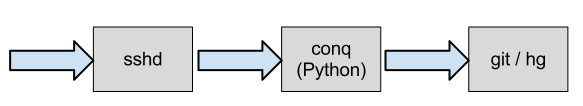
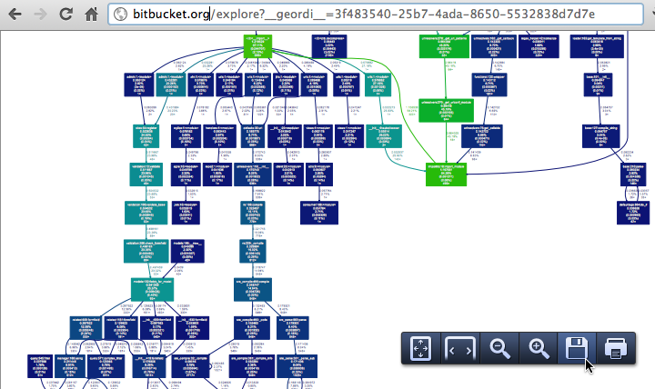

Continuous Introspection
(finding the slow bits)
Erik van Zijst
Wasted Cycles on Bitbucket
- 60% load decrease on all web servers!
- Much faster response times
Slowness in Web Apps
- slow SQL queries (or too many!)
- algorithms with exponential complexity
-
lock contention:
- between threads
- database table/row locks
- file locks (git / hg)
- excessive IO (disk/network)
r'^(a+)+$'(evil regexps)
(Slowness is often context-dependent)
Consequences
- 503 — worker pools full
- 500 — if requests time out (Gunicorn SIGKILL)
The latter is best avoided as it destroys forensic evidence and leaves stale state (e.g. lock files)
Meet django-geordi

- add "
?__geordi__" to any URL - replay prod request with profiling
- produces pdf call graph
- runs outside the worker pool without timeouts (celeryd)

Dogslow
bitbucket.org/evzijst/dogslow- Django middleware
- emails tracebacks of slow requests
- no performance penalty, safe on prod
<self-promotion>
used by Instagram and Bitbucket
</self-promotion>
Email from Dogslow catching a slow hg blame page:
Subject: Slow Request Watchdog: GET /annotate/521ae2309f0b/adblocklist.txt
From: notifications-noreply@atlassian.com
To: bitbucket-errors@atlassian.com
Date: Tue, 22 May 2012 21:14:30 -0000
GET /annotate/521ae2309f0b/adblocklist.txt
Thread ID: 140143111386880
Process ID: 19530
Started: 22-05-2012 21:14:05 UTC
File "bitbucket/apps/repo2/views.py", line 792, in annotate
blame = file_.blame()
File "site-packages/orochi/base.py", line 1208, in wrapper
return func(self, *args, **kwargs)
File "site-packages/orochi/hg.py", line 606, in blame
self._fctx.annotate(linenumber=False)]
File "site-packages/mercurial/context.py", line 509, in annotate
curr = decorate(f.data(), f)
File "site-packages/mercurial/context.py", line 360, in data
return self._filelog.read(self._filenode)
File "site-packages/mercurial/filelog.py", line 40, in read
return t
File "site-packages/mercurial/revlog.py", line 904, in revision
text = self._checkhash(text, node, rev)
File "site-packages/mercurial/revlog.py", line 911, in _checkhash
if node != hash(text, p1, p2):
File "site-packages/mercurial/revlog.py", line 75, in hash
s.update(text)
Interruptingcow
bitbucket.org/evzijst/interruptingcow- raises a
RuntimeErrorin the worker - fail in a controlled manner
- ensure proper cleanup (db, lock files)
- uses UNIX signals (SIGALRM, GIL-proof)
Timebox expensive operations
from interruptingcow import timeout
try:
with timeout(20, RuntimeError):
while True:
# expensive loop
pass
except RuntimeError:
print 'Interrupted'
Nested timeouts
from interruptingcow import timeout
class Outer(RuntimeError):
pass
class Inner(RuntimeError):
pass
try:
with timeout(20, Outer):
try:
with timeout(1, Inner):
# some expensive operation
try_the_expensive_thing()
except Inner:
do_the_cheap_thing_instead()
except Outer:
print 'Program as a whole failed to return in 20 secs'
Summary
- Geordi — profile production environments
- Dogslow — tracebacks of slow requests bitbucket.org/evzijst/dogslow
- Interruptedcow — prevent slowness and fail gracefully bitbucket.org/evzijst/interruptingcow